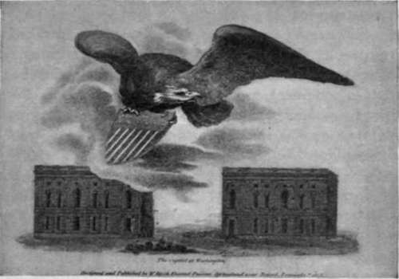

Old Capitol. Part 2
Description
This section is from the book "The National Capitol. Its Architecture Art And History", by George C. Hazelton, Jr. Also available from Amazon: The National Capitol Its Architecture Art and History.
Old Capitol. Part 2
The corresponding south wing* was not so far completed as to be occupied by the House of Representatives until the beginning of the extra session on October 26, 1807. At the close of the first session in Washington, however, the House left its chamber on the west side of the north wing, where soon after the Library was placed, and on December 7, 1801, took up its quarters in " the oven," a temporary low brick structure of elliptical shape on the sitef of the proposed south wing.
In 1803, Benjamin Henry Latrobe, an accomplished English architect, who had settled in Richmond soon after coming to America, was appointed by Jefferson to take charge of the work as surveyor at the Capitol, with full authority to construct the south wing, and to remodel the north wing if he should think advisable. Latrobe was a man of some artistic taste, as is seen from a study of his work and a perusal of the many reports he sent to Congress respecting its progress. He is said to have been presented to President Washington at Mount Vernon shortly after his arrival in the United States, in 1796, by Judge Bushrod Washington, and to have made a most favorable impression upon the Executive. Following I^itrobe's appointment, the foundations of the external walls of the south wing, he says, " were condemned and pulled down. The center building occupied by the House of Representatives remained standing,—because in the opinion of many a further appropriation appeared at least doubtful." Very little other work was done on account of the narrow space around the building, and all the workmen were discharged in December. After the House adjourned, on March 27, 1804, however, the temporary building was torn down and removed, and the south constructure commenced in earnest.
THE CAPITOL, 1807.
* For plans, see Appendix, p. 255. f See Jefferson's letter. Appendix, p. 24c).
The Quasimodo of the Capitol, no doubt, chuckled gleefully at the steadfastness of the majority of the Members but three days before the adjournment. Despite the advocacy of John Randolph and the strength given to the measure by his " yea"—to say nothing of the personal discomfort of the Representatives—they then defeated by a vote of 76 to 27 a Senate amendment providing for " finishing the President's House in such manner as will accommodate both Houses of Congress; and for the purpose of renting, purchasing, or building a suitable house for the accommodation of the President".
The destruction of the "oven" necessitated another removal of the House, in the fall of 1804. They evidently again took up their old quarters in the north wing, as in the next year $700 were appropriated " for defraying the expenses incidental to the dismantling the late Library room of Congress, and fitting it up for the accommodation of the House of Representatives, at the ensuing session." Here, Latrobe tells us, their extremely inconvenient situation during the session of 1805-06 "created a very great impatience in all the members to occupy their new Hall, at the next session." Indeed, they specially called upon the President to carry the work upon the south wing to completion by that time, but it proved to be impossible. On December 8, 1806, one of the Representatives observed that " he had kept his seat not without considerable alarm " ; and it was resolved that the Speaker take steps to pull down the plastering or otherwise secure " the ceiling of the chamber in which the sessions of the House are now held." This had swagged in some places more than half an inch, and in another part of the House had actually fallen down.
In the spring of 1807, in conformity to a report of the Superintendent, a bill was prepared providing for the alteration, as well as the repair, of the east side of the north wing. It proposed to make two stories of the Senate Cham, ber, and to apply the upper one to the courts. The Senate was to be accorm modated on the west side of the north wing, by demolishing the Library> committee rooms, etc., and making in their place one large room. Wher* the bill came to the House, however, it was amended, Mr. J. R. Williams saying that he knew of but one reason for the proposed change : "It was to make things correspond with the parliamentary language. When a bill is sent down from the Senate to the House of Representatives, it will, if the alteration takes place, really descend, as this House will be about fifteen feet lower than the Senate." Rather than incur a great expense for such an object, he continued, he " would rather alter the language and say, a bill is sent up to-this House and down to the Senate".
At the close of the year 1806 the framing of the roof of the south wing was put on, and during the winter it was covered in. The greatest exertions were then made to finish the interior, in order to be ready for the early meeting of the House in October, 1807. Latrobe seems somewhat to have altered Thornton's plan for this chamber by substituting a hall in the form of " two semi-circles abutting on a parallelogram " for one of elliptical shape. "The seats of the members will occupy the area of the House," he reports, "and look to the south. Behind the Speaker's chair is a small chamber appropriated to his use. The House is surrounded by a plain wall seven feet high. The 24 Corinthian columns which rise upon this wall and support the dome, are 26 feet 8 inches in height, the entablature is 6 feet high, the blocking course 1 foot 6 inches, and the dome rises 12 feet 6 inches, in all 53 feet 8 inches. The area within the wall is 85 feet 6 inches wide. The space within the external walls is 110 feet by 86 feet." The Corinthian columns, probably of freestone, and their ornate capitals, were finished upon the ground. There were at this time in the service of the government, two skillful Italian sculptors, Andrei and Franzoni, who, with their pupil, Somerville, an American citizen, were employed, for the most part, upon this and the other more difficult work at the Capitol.
Continue to:
- prev: Old Capitol
- Table of Contents
- next: Old Capitol. Part 3